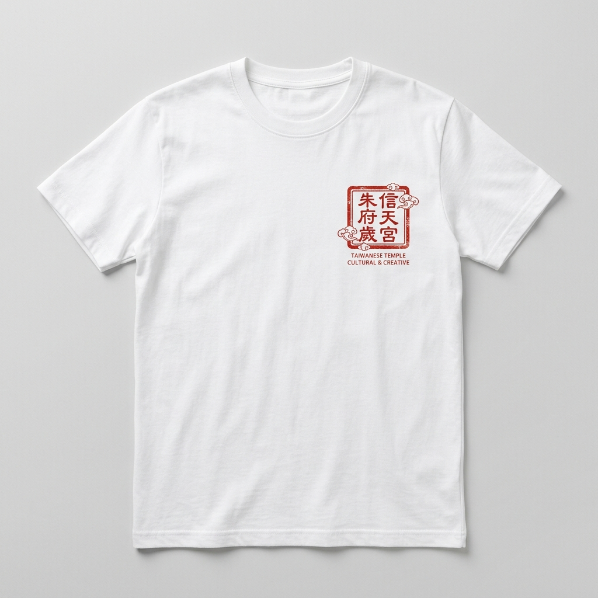
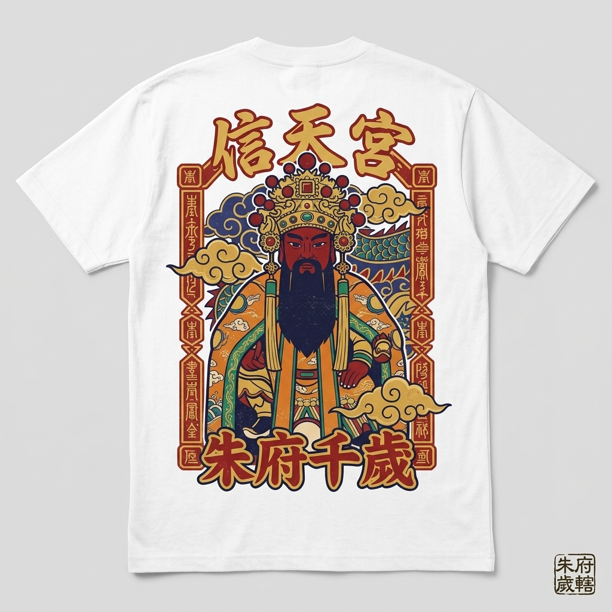
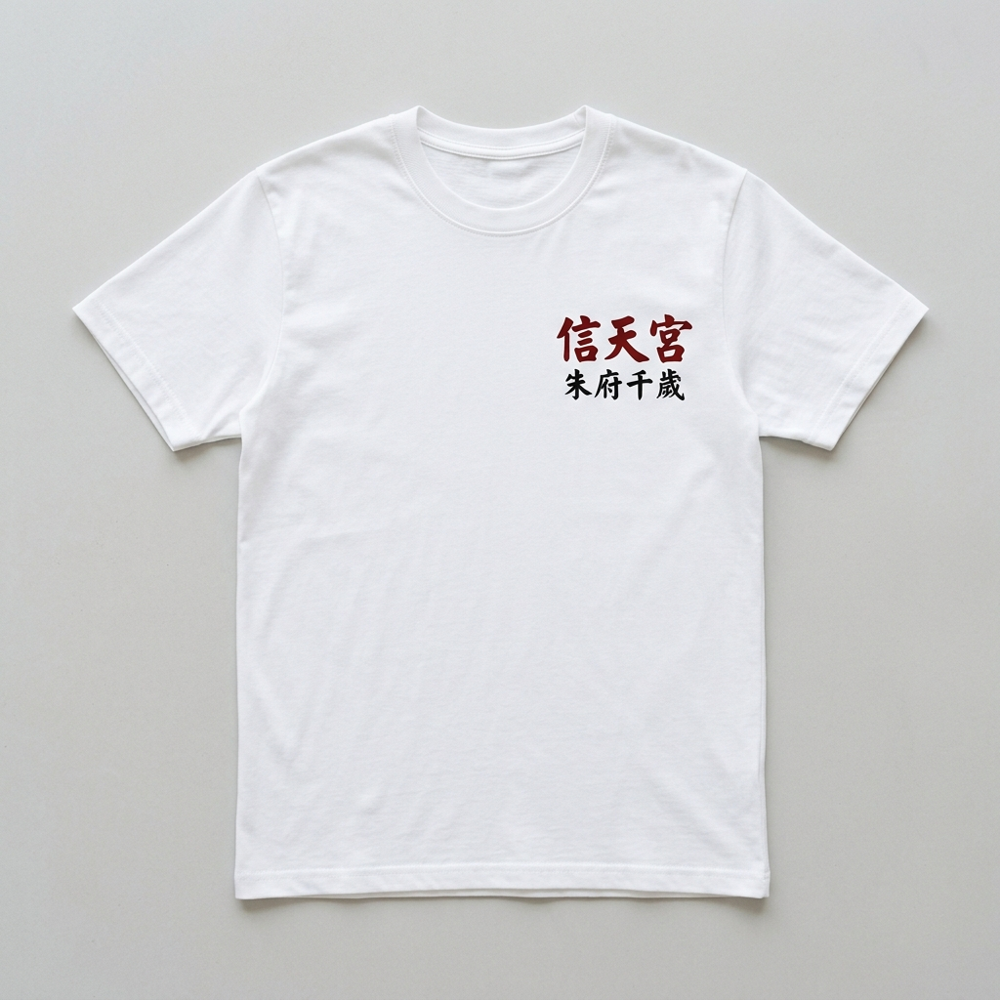
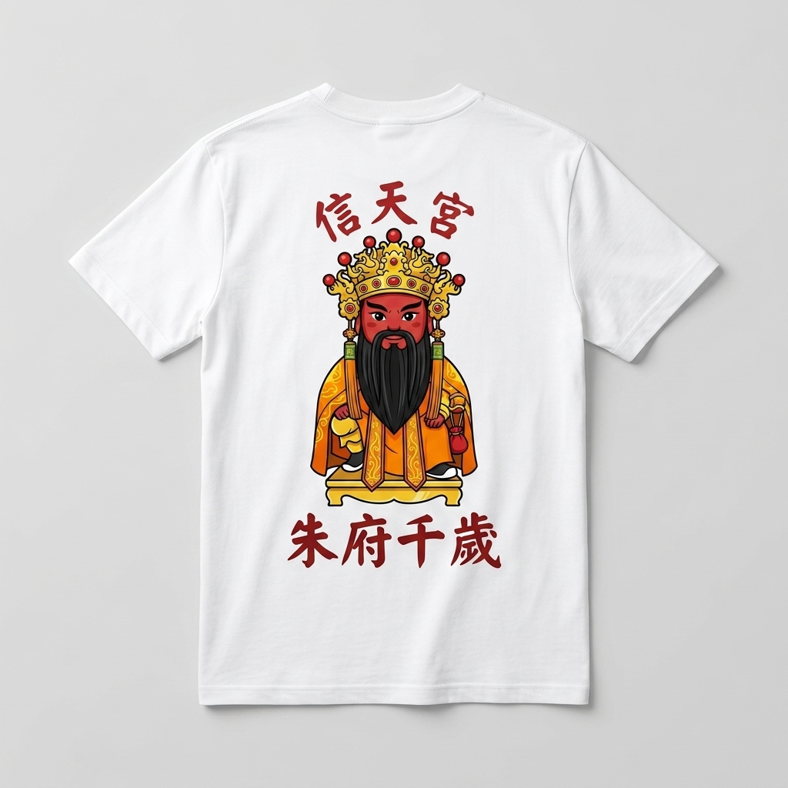
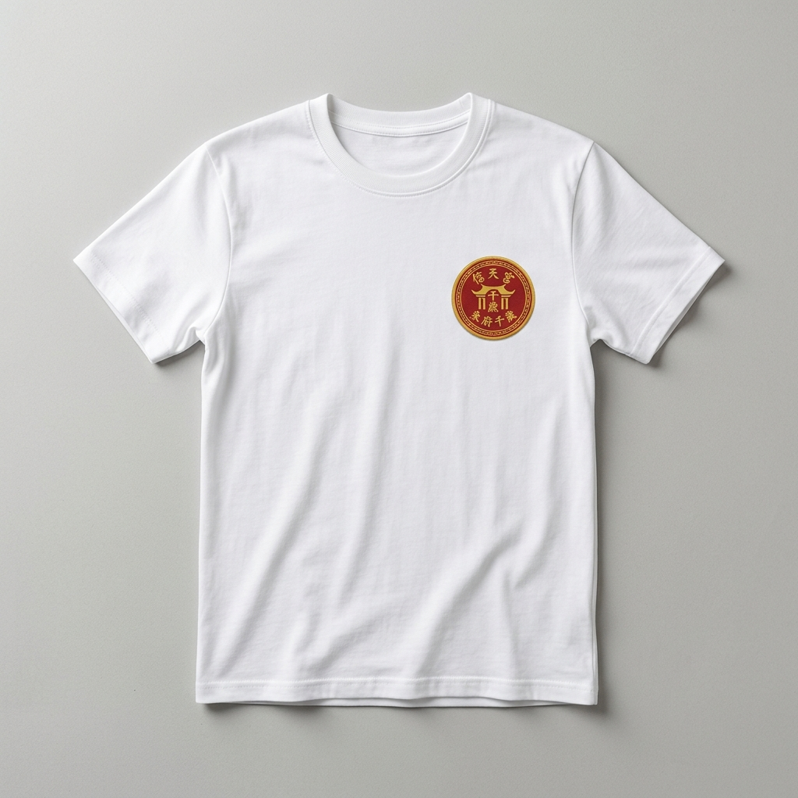
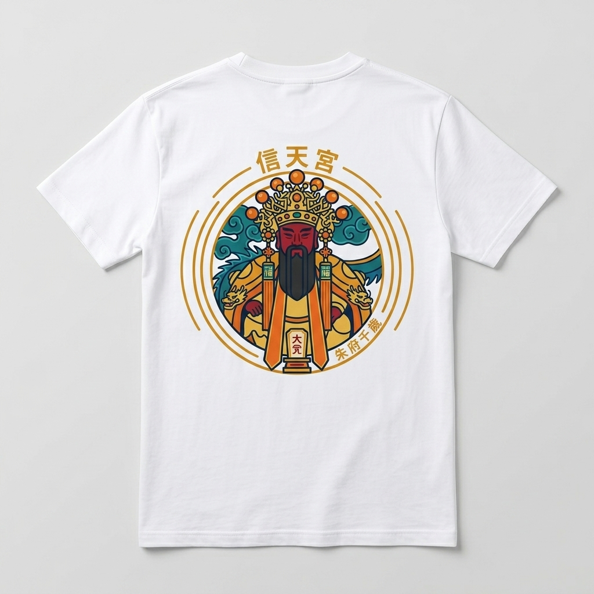

短袖上衣圖案設計 - 公開票選與決策頁面
請點擊下方按鈕投票，幫助委員會決定最終製作款式！
平安符框主圖 + 朱紅印章 Logo
Q版神像大圖 + 雙色書法 Logo
圓形宮廟徽章 + 小徽章 Logo
融合「平安符符籤邊框」與「朱紅官印印章框」，採用宮廟經典配色（朱砂紅、金黃、靛青），具備濃厚的在地潮牌文創質感。

廟宇朱紅官印框「信天宮 朱府千歲」文字 Logo

平安符邊框 + 祥雲圖騰 + 朱府千歲神像大圖
親切討喜的神像 Q 版造型，搭配黑紅雙色書法體文字，簡單大方，適合各年齡層信眾穿著。

典雅朱紅/墨黑雙色書法純文字 Logo

滿版 Q 版朱府千歲神像主視覺
以幾何雙環圓形宮廟徽章為結構，將神像與字體完美融合於金紅圓章中，呈現現代復古宮廟潮牌風格。

金紅精緻圓形宮廟小徽章 Logo

30cm 滿版圓形宮廟徽章主圖案